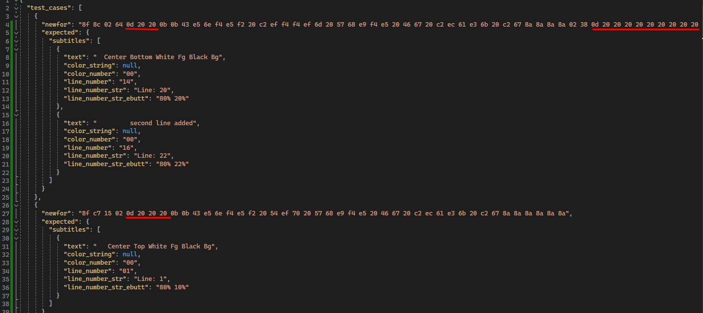

stl version v3.7.1.1
stl version v3.7.1.1
Date: 2024.06.25
Issues in Milestone
---
- [11] Newfor parsing. Fix color detection
Features
---
Newfor parsing. Fix color detection
Fixed Newfor color detection. The color is searched after 2 bytes responsible for the line number.
For EBU-TT subtitle generation, if the color is not specified in Newfor, the default color `white` is used. Previously used `yellow2`